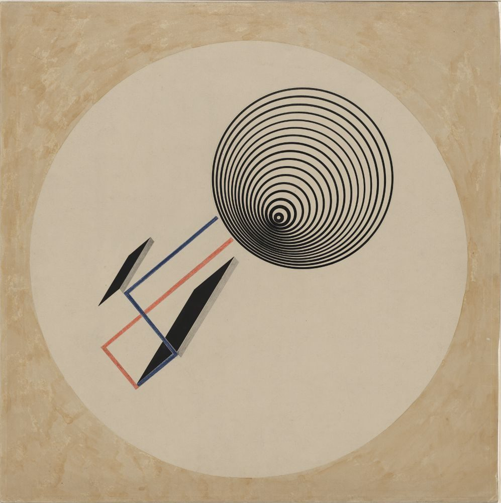
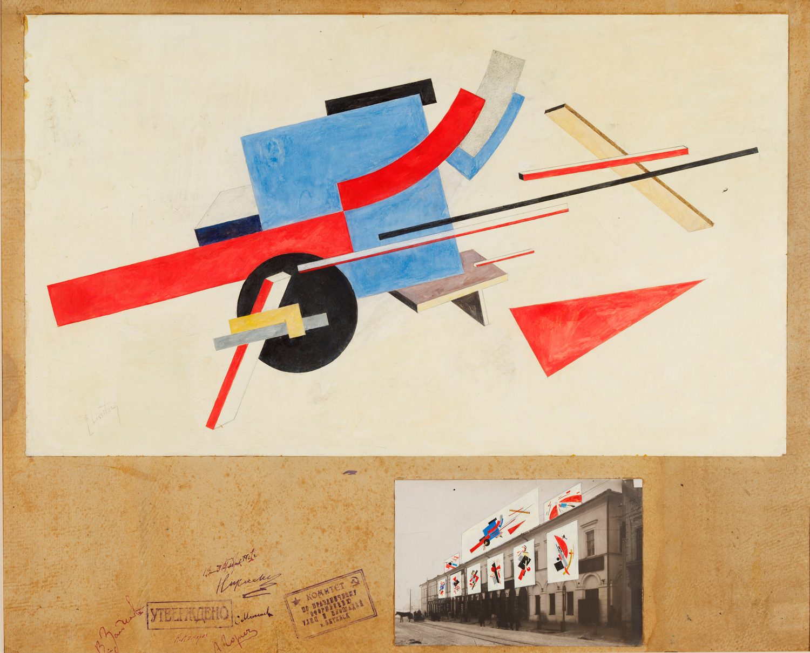
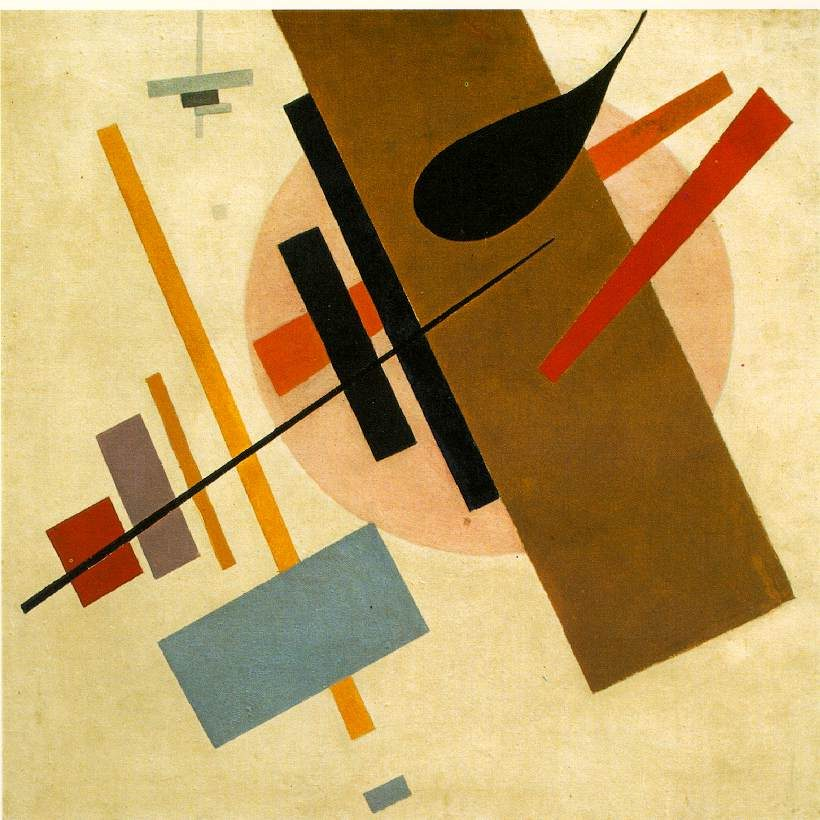
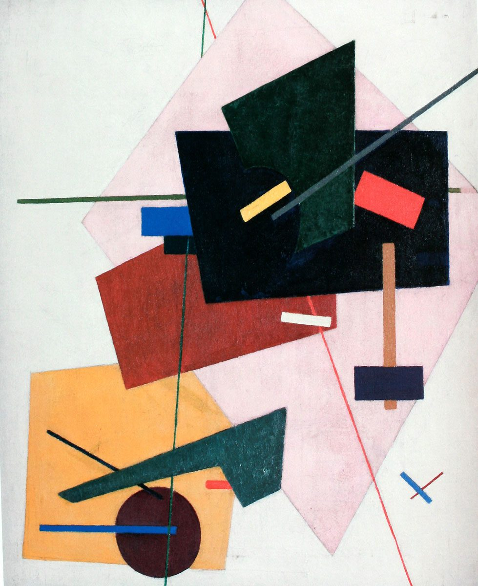

// 51.5074 N — construction archive — origin 0,0
Construction as a project.
The Proun — Lissitzky's "interchange station between painting and architecture" — read as a blueprint archive of the avant-garde's spatial thinking.
12Construction plates
1913–24Date range
4Phases
60Archive frames
01 / Finding aid
Construction plates [ 12 ]
PN-01

PN-011924
Proun 93
El Lissitzky
Axonometric · open →PN-02

PN-021921
Proun for the Street
El Lissitzky
Urban plan · open →PN-03
PN-031921
OBMOKhU Spatial Constructions
OBMOKhU group
Space frame · open →PN-04

PN-041916
Supremus No. 55
Kazimir Malevich
Dynamic field · open →PN-05
PN-051915
Suprematist Composition
Kazimir Malevich
Static block · open →PN-06

PN-061917
Suprematist Construction
Ivan Kliun
Layered plane · open →PN-07
PN-071918
Painterly Architectonic
Lyubov Popova
Architectonic · open →PN-08NO PLATE
documentary record
documentary record
PN-081923
Proun Relief Study
El Lissitzky
Relief · open →PN-09
PN-091916
Non-Objective Construction
Olga Rozanova
Colour field · open →PN-10
PN-101913
Composition VII study
Wassily Kandinsky
Dynamic mass · open →PN-11
PN-111919
Red Wedge Diagram
El Lissitzky
Vector diagram · open →PN-12
PN-121915
Black Square Module
Kazimir Malevich
Ground zero · open →No plates match.
Try another phase, structure or search — or reset the finding aid.
02 / The brief
A weightless architecture.
The Proun proposed a construction that belonged to no single medium — neither picture nor building. The Edik Natanov Collection keeps the works and photographs that let the project be reconstructed.